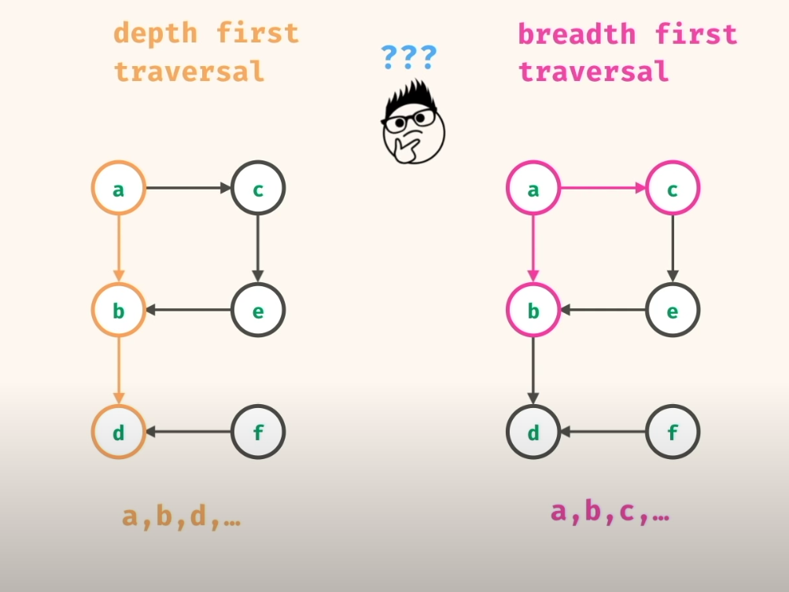

<?xml version="1.0" encoding="utf-8"?>
<!DOCTYPE html PUBLIC "-//W3C//DTD XHTML 1.0 Strict//EN"
"http://www.w3.org/TR/xhtml1/DTD/xhtml1-strict.dtd">
<html xmlns="http://www.w3.org/1999/xhtml" lang="en" xml:lang="en">
<head>
<!-- 2026-02-02 Mon 08:08 -->
<meta http-equiv="Content-Type" content="text/html;charset=utf-8" />
<meta name="viewport" content="width=device-width, initial-scale=1" />
<title>Graphs</title>
<meta name="author" content="Michael Leibbrandt" />
<meta name="generator" content="Org Mode" />
<style>
  #content { max-width: 60em; margin: auto; }
  .title  { text-align: center;
             margin-bottom: .2em; }
  .subtitle { text-align: center;
              font-size: medium;
              font-weight: bold;
              margin-top:0; }
  .todo   { font-family: monospace; color: red; }
  .done   { font-family: monospace; color: green; }
  .priority { font-family: monospace; color: orange; }
  .tag    { background-color: #eee; font-family: monospace;
            padding: 2px; font-size: 80%; font-weight: normal; }
  .timestamp { color: #bebebe; }
  .timestamp-kwd { color: #5f9ea0; }
  .org-right  { margin-left: auto; margin-right: 0px;  text-align: right; }
  .org-left   { margin-left: 0px;  margin-right: auto; text-align: left; }
  .org-center { margin-left: auto; margin-right: auto; text-align: center; }
  .underline { text-decoration: underline; }
  #postamble p, #preamble p { font-size: 90%; margin: .2em; }
  p.verse { margin-left: 3%; }
  pre {
    border: 1px solid #e6e6e6;
    border-radius: 3px;
    background-color: #f2f2f2;
    padding: 8pt;
    font-family: monospace;
    overflow: auto;
    margin: 1.2em;
  }
  pre.src {
    position: relative;
    overflow: auto;
  }
  pre.src:before {
    display: none;
    position: absolute;
    top: -8px;
    right: 12px;
    padding: 3px;
    color: #555;
    background-color: #f2f2f299;
  }
  pre.src:hover:before { display: inline; margin-top: 14px;}
  /* Languages per Org manual */
  pre.src-asymptote:before { content: 'Asymptote'; }
  pre.src-awk:before { content: 'Awk'; }
  pre.src-authinfo::before { content: 'Authinfo'; }
  pre.src-C:before { content: 'C'; }
  /* pre.src-C++ doesn't work in CSS */
  pre.src-clojure:before { content: 'Clojure'; }
  pre.src-css:before { content: 'CSS'; }
  pre.src-D:before { content: 'D'; }
  pre.src-ditaa:before { content: 'ditaa'; }
  pre.src-dot:before { content: 'Graphviz'; }
  pre.src-calc:before { content: 'Emacs Calc'; }
  pre.src-emacs-lisp:before { content: 'Emacs Lisp'; }
  pre.src-fortran:before { content: 'Fortran'; }
  pre.src-gnuplot:before { content: 'gnuplot'; }
  pre.src-haskell:before { content: 'Haskell'; }
  pre.src-hledger:before { content: 'hledger'; }
  pre.src-java:before { content: 'Java'; }
  pre.src-js:before { content: 'Javascript'; }
  pre.src-latex:before { content: 'LaTeX'; }
  pre.src-ledger:before { content: 'Ledger'; }
  pre.src-lisp:before { content: 'Lisp'; }
  pre.src-lilypond:before { content: 'Lilypond'; }
  pre.src-lua:before { content: 'Lua'; }
  pre.src-matlab:before { content: 'MATLAB'; }
  pre.src-mscgen:before { content: 'Mscgen'; }
  pre.src-ocaml:before { content: 'Objective Caml'; }
  pre.src-octave:before { content: 'Octave'; }
  pre.src-org:before { content: 'Org mode'; }
  pre.src-oz:before { content: 'OZ'; }
  pre.src-plantuml:before { content: 'Plantuml'; }
  pre.src-processing:before { content: 'Processing.js'; }
  pre.src-python:before { content: 'Python'; }
  pre.src-R:before { content: 'R'; }
  pre.src-ruby:before { content: 'Ruby'; }
  pre.src-sass:before { content: 'Sass'; }
  pre.src-scheme:before { content: 'Scheme'; }
  pre.src-screen:before { content: 'Gnu Screen'; }
  pre.src-sed:before { content: 'Sed'; }
  pre.src-sh:before { content: 'shell'; }
  pre.src-sql:before { content: 'SQL'; }
  pre.src-sqlite:before { content: 'SQLite'; }
  /* additional languages in org.el's org-babel-load-languages alist */
  pre.src-forth:before { content: 'Forth'; }
  pre.src-io:before { content: 'IO'; }
  pre.src-J:before { content: 'J'; }
  pre.src-makefile:before { content: 'Makefile'; }
  pre.src-maxima:before { content: 'Maxima'; }
  pre.src-perl:before { content: 'Perl'; }
  pre.src-picolisp:before { content: 'Pico Lisp'; }
  pre.src-scala:before { content: 'Scala'; }
  pre.src-shell:before { content: 'Shell Script'; }
  pre.src-ebnf2ps:before { content: 'ebfn2ps'; }
  /* additional language identifiers per "defun org-babel-execute"
       in ob-*.el */
  pre.src-cpp:before  { content: 'C++'; }
  pre.src-abc:before  { content: 'ABC'; }
  pre.src-coq:before  { content: 'Coq'; }
  pre.src-groovy:before  { content: 'Groovy'; }
  /* additional language identifiers from org-babel-shell-names in
     ob-shell.el: ob-shell is the only babel language using a lambda to put
     the execution function name together. */
  pre.src-bash:before  { content: 'bash'; }
  pre.src-csh:before  { content: 'csh'; }
  pre.src-ash:before  { content: 'ash'; }
  pre.src-dash:before  { content: 'dash'; }
  pre.src-ksh:before  { content: 'ksh'; }
  pre.src-mksh:before  { content: 'mksh'; }
  pre.src-posh:before  { content: 'posh'; }
  /* Additional Emacs modes also supported by the LaTeX listings package */
  pre.src-ada:before { content: 'Ada'; }
  pre.src-asm:before { content: 'Assembler'; }
  pre.src-caml:before { content: 'Caml'; }
  pre.src-delphi:before { content: 'Delphi'; }
  pre.src-html:before { content: 'HTML'; }
  pre.src-idl:before { content: 'IDL'; }
  pre.src-mercury:before { content: 'Mercury'; }
  pre.src-metapost:before { content: 'MetaPost'; }
  pre.src-modula-2:before { content: 'Modula-2'; }
  pre.src-pascal:before { content: 'Pascal'; }
  pre.src-ps:before { content: 'PostScript'; }
  pre.src-prolog:before { content: 'Prolog'; }
  pre.src-simula:before { content: 'Simula'; }
  pre.src-tcl:before { content: 'tcl'; }
  pre.src-tex:before { content: 'TeX'; }
  pre.src-plain-tex:before { content: 'Plain TeX'; }
  pre.src-verilog:before { content: 'Verilog'; }
  pre.src-vhdl:before { content: 'VHDL'; }
  pre.src-xml:before { content: 'XML'; }
  pre.src-nxml:before { content: 'XML'; }
  /* add a generic configuration mode; LaTeX export needs an additional
     (add-to-list 'org-latex-listings-langs '(conf " ")) in .emacs */
  pre.src-conf:before { content: 'Configuration File'; }

  table { border-collapse:collapse; }
  caption.t-above { caption-side: top; }
  caption.t-bottom { caption-side: bottom; }
  td, th { vertical-align:top;  }
  th.org-right  { text-align: center;  }
  th.org-left   { text-align: center;   }
  th.org-center { text-align: center; }
  td.org-right  { text-align: right;  }
  td.org-left   { text-align: left;   }
  td.org-center { text-align: center; }
  dt { font-weight: bold; }
  .footpara { display: inline; }
  .footdef  { margin-bottom: 1em; }
  .figure { padding: 1em; }
  .figure p { text-align: center; }
  .equation-container {
    display: table;
    text-align: center;
    width: 100%;
  }
  .equation {
    vertical-align: middle;
  }
  .equation-label {
    display: table-cell;
    text-align: right;
    vertical-align: middle;
  }
  .inlinetask {
    padding: 10px;
    border: 2px solid gray;
    margin: 10px;
    background: #ffffcc;
  }
  #org-div-home-and-up
   { text-align: right; font-size: 70%; white-space: nowrap; }
  textarea { overflow-x: auto; }
  .linenr { font-size: smaller }
  .code-highlighted { background-color: #ffff00; }
  .org-info-js_info-navigation { border-style: none; }
  #org-info-js_console-label
    { font-size: 10px; font-weight: bold; white-space: nowrap; }
  .org-info-js_search-highlight
    { background-color: #ffff00; color: #000000; font-weight: bold; }
  .org-svg { }
</style>
<style>
        body {
          font-family: sans-serif;
          line-height: 1.5;
          margin: 2em;
          background-color: #ffffff;
          color: #111111;
        }

        a { color: #1a0dab; text-decoration: none; }
        a:hover { text-decoration: underline; }

        /* Code block styling */
        pre.src {
          padding: 1em;
          border-radius: 6px;
          overflow-x: auto;
          background-color: #f0f0f0;
          color: #222222;
          border: 1px solid #ddd;
          font-family: monospace;
        }

        /* Syntax highlighting for Org-generated classes */
        span.org-keyword { color: #005999; font-weight: bold; }
        span.org-string  { color: #aa3333; }
        span.org-comment { color: #666666; font-style: italic; }
        span.org-type    { color: #007700; font-weight: bold; }
        span.org-variable { color: #993399; }

        /* Dark mode support */
        @media (prefers-color-scheme: dark) {
          body {
            background-color: #1e1e1e;
            color: #e0e0e0;
          }

          a { color: #8ab4f8; }

          pre.src {
            background-color: #2c2c2c;
            color: #f0f0f0;
            border: 1px solid #444;
          }

          /* Dark syntax */
          span.org-keyword { color: #569cd6; font-weight: bold; }
          span.org-string  { color: #d7a65a; }
          span.org-comment { color: #999988; font-style: italic; }
          span.org-type    { color: #6ab04c; font-weight: bold; }
          span.org-variable { color: #c586c0; }
        }

        ul { list-style-type: disc; padding-left: 2em; }
      </style>
</head>
<body>
<div id="content" class="content">
<h1 class="title">Graphs</h1>
<div id="table-of-contents" role="doc-toc">
<h2>Table of Contents</h2>
<div id="text-table-of-contents" role="doc-toc">
<ul>
<li><a href="#orgc459787">1. Graphs</a>
<ul>
<li><a href="#org0202992">1.1. Directed Graphs</a></li>
<li><a href="#org33c11f5">1.2. Undirected</a></li>
<li><a href="#org6546113">1.3. Adjacency list</a></li>
<li><a href="#org457d7f2">1.4. Acyclic</a></li>
<li><a href="#org8cd4977">1.5. Cyclic</a></li>
<li><a href="#org19ded04">1.6. Complexity</a></li>
</ul>
</li>
</ul>
</div>
</div>

<div id="outline-container-orgc459787" class="outline-2">
<h2 id="orgc459787"><span class="section-number-2">1.</span> Graphs</h2>
<div class="outline-text-2" id="text-1">
<p>
<a href="https://www.youtube.com/watch?v=tWVWeAqZ0WU">Graph Algorithms for Technical Interviews - Full Course</a>
</p>

<p>
Contains <code>nodes</code> (or vertex) + <code>edges</code>
</p>

<p>
Neighbor node = Node accessible through an edge
</p>
</div>

<div id="outline-container-org0202992" class="outline-3">
<h3 id="org0202992"><span class="section-number-3">1.1.</span> Directed Graphs</h3>
<div class="outline-text-3" id="text-1-1">
<p>
Flows in one direction
</p>
</div>
</div>

<div id="outline-container-org33c11f5" class="outline-3">
<h3 id="org33c11f5"><span class="section-number-3">1.2.</span> Undirected</h3>
<div class="outline-text-3" id="text-1-2">
<p>
Flow goes both ways (bidirectional)
</p>
</div>
</div>

<div id="outline-container-org6546113" class="outline-3">
<h3 id="org6546113"><span class="section-number-3">1.3.</span> Adjacency list</h3>
<div class="outline-text-3" id="text-1-3">
<p>
Used to represent a graph in a programmatical way:
</p>


<div id="orgb4b4bc9" class="figure">
<p>
</p>
</div>


<p>
(Constant lookup)
Key = Node, values = Neighbor nodes
</p>


<div id="orgd3ddd99" class="figure">
<p>
</p>
</div>


<p>
<a href="20230711185142-breadth_first_search.html#ID-b3d3011e-5dd0-429c-833c-962a42ad09d2">BFS</a> = Stack ("Deep" in one direction search)
<a href="20230711185212-depth_first_search.html#ID-0352da89-e0e5-41d8-bb1a-6b69d5d2cd3a">DFS</a> = Queue (Explosive search)
</p>

<div class="org-src-container">
<pre class="src src-js"><span class="org-keyword">const</span> <span class="org-variable-name">graph</span> = {
  a: [<span class="org-string">'c'</span>, <span class="org-string">'b'</span>],
  b: [<span class="org-string">'d'</span>],
  c: [<span class="org-string">'e'</span>],
  d: [<span class="org-string">'f'</span>],
  e: [],
  f: [],
}

<span class="org-keyword">const</span> <span class="org-variable-name">iterativeDepthFirstPrint</span> = (graph, source) =&gt; {
  <span class="org-keyword">const</span> <span class="org-variable-name">stack</span> = [source]

  <span class="org-keyword">while</span> (stack.length &gt; 0) {
    <span class="org-keyword">const</span> <span class="org-variable-name">current</span> = stack.pop()
    <span class="org-keyword">for</span> (<span class="org-keyword">let</span> <span class="org-variable-name">neighbor</span> <span class="org-keyword">of</span> graph[current]) {
      stack.push(neighbor)
    }
    console.log(current)
  }
}

<span class="org-comment-delimiter">// </span><span class="org-comment">No need for base case, as in the case of no neighbor, [] empty array, no recursive call is made.
</span><span class="org-keyword">const</span> <span class="org-variable-name">recursiveDepthFirstPrint</span> = (graph, source) =&gt; {
  console.log(source)
  <span class="org-keyword">for</span>(<span class="org-keyword">let</span> <span class="org-variable-name">neighbor</span> <span class="org-keyword">of</span> graph[source]) {
    recursiveDepthFirstPrint(graph, neighbor)
  }
}

<span class="org-comment-delimiter">// </span><span class="org-comment">Can only be applied iteratively as it needs to make use of a queue.
</span><span class="org-keyword">const</span> <span class="org-variable-name">breadthFirstPrint</span> = (graph, source) =&gt; {
  console.log(<span class="org-string">'breadthFirstPrint: '</span>)
  <span class="org-keyword">const</span> <span class="org-variable-name">queue</span> = [source]

  <span class="org-keyword">while</span> (queue.length &gt; 0) {
    <span class="org-keyword">const</span> <span class="org-variable-name">current</span> = queue.shift()
    console.log(current)
    <span class="org-keyword">for</span> (<span class="org-keyword">let</span> <span class="org-variable-name">neighbor</span> <span class="org-keyword">of</span> graph[current]) {
      queue.push(neighbor)
    }
  }
}

iterativeDepthFirstPrint(graph, <span class="org-string">'a'</span>) <span class="org-comment-delimiter">// </span><span class="org-comment">Should be abdfce
</span>recursiveDepthFirstPrint(graph, <span class="org-string">'a'</span>) <span class="org-comment-delimiter">// </span><span class="org-comment">Should be acebdf
</span>breadthFirstPrint(graph, <span class="org-string">'a'</span>) <span class="org-comment-delimiter">// </span><span class="org-comment">Should be acbedf
</span>
<span class="org-comment-delimiter">// </span><span class="org-comment">Checks if destination node is found
</span><span class="org-comment-delimiter">// </span><span class="org-comment">DFS
</span><span class="org-keyword">const</span> <span class="org-variable-name">iterativeHasPath</span> = (graph, source, destination) =&gt; {
  <span class="org-keyword">const</span> <span class="org-variable-name">stack</span> = [source]
  <span class="org-keyword">while</span> (stack.length &gt; 0) {
    <span class="org-keyword">const</span> <span class="org-variable-name">current</span> = stack.pop()
    <span class="org-keyword">if</span> (current === destination) <span class="org-keyword">return</span> <span class="org-constant">true</span>
    <span class="org-keyword">for</span> (<span class="org-keyword">let</span> <span class="org-variable-name">neighbor</span> <span class="org-keyword">of</span> graph[current]) {
      stack.push(neighbor)
    }
  }
  <span class="org-keyword">return</span> <span class="org-constant">false</span>
}

<span class="org-keyword">const</span> <span class="org-variable-name">recursiveHasPath</span> = (graph, source, destination) =&gt; {
  <span class="org-keyword">if</span> (source === destination) <span class="org-keyword">return</span> <span class="org-constant">true</span>
  <span class="org-keyword">for</span> (<span class="org-keyword">let</span> <span class="org-variable-name">neighbor</span> <span class="org-keyword">of</span> graph[source]) {
    <span class="org-keyword">if</span> (recursiveHasPath(graph, neighbor, destination) === <span class="org-constant">true</span>) <span class="org-keyword">return</span> <span class="org-constant">true</span>
  }
  <span class="org-keyword">return</span> <span class="org-constant">false</span>
}

<span class="org-keyword">const</span> <span class="org-variable-name">breadthFirstHasPath</span> = (graph, source, destination) =&gt; {
  <span class="org-keyword">const</span> <span class="org-variable-name">queue</span> = [source]
  <span class="org-keyword">while</span> (queue.length &gt; 0) {
    <span class="org-keyword">const</span> <span class="org-variable-name">current</span> = queue.shift()
    <span class="org-keyword">if</span> (current === destination) <span class="org-keyword">return</span> <span class="org-constant">true</span>
    <span class="org-keyword">for</span> (<span class="org-keyword">let</span> <span class="org-variable-name">neighbor</span> <span class="org-keyword">of</span> graph[current]) {
      queue.push(neighbor)
    }
  }
  <span class="org-keyword">return</span> <span class="org-constant">false</span>
}

console.log(iterativeHasPath(graph, <span class="org-string">'a'</span>, <span class="org-string">'f'</span>)) <span class="org-comment-delimiter">// </span><span class="org-comment">should return true
</span>console.log(recursiveHasPath(graph, <span class="org-string">'a'</span>, <span class="org-string">'e'</span>)) <span class="org-comment-delimiter">// </span><span class="org-comment">should return true
</span>console.log(breadthFirstHasPath(graph, <span class="org-string">'a'</span>, <span class="org-string">'e'</span>)) <span class="org-comment-delimiter">// </span><span class="org-comment">should return true
</span>
<span class="org-comment-delimiter">// </span><span class="org-comment">Undirected Graph
</span>
<span class="org-comment-delimiter">// </span><span class="org-comment">Convert Edge List to Adjacency List (Easier to work with)
</span><span class="org-comment-delimiter">// </span><span class="org-comment">Generates Graph nodes as keys, with values being neighbors
</span><span class="org-keyword">const</span> <span class="org-variable-name">buildGraph</span> = (edges) =&gt; {
  <span class="org-keyword">const</span> <span class="org-variable-name">graph</span> = {}

  <span class="org-keyword">for</span> (<span class="org-keyword">let</span> <span class="org-variable-name">edge</span> <span class="org-keyword">of</span> edges) {
    <span class="org-keyword">const</span> [<span class="org-variable-name">a</span>, <span class="org-variable-name">b</span>] = edge <span class="org-comment-delimiter">// </span><span class="org-comment">Pair of nodes, edge = ['i', 'j']
</span>    <span class="org-keyword">if</span> (!(a <span class="org-keyword">in</span> graph)) graph[a] = []
    <span class="org-keyword">if</span> (!(b <span class="org-keyword">in</span> graph)) graph[b] = []
    graph[a].push(b)
    graph[b].push(a)
  }
  <span class="org-keyword">return</span> graph
}

<span class="org-comment-delimiter">// </span><span class="org-comment">Every pair represents a bi-directional connection/edge between two nodes
</span><span class="org-keyword">const</span> <span class="org-variable-name">edges</span> = [
  [<span class="org-string">"i"</span>, <span class="org-string">"j"</span>],
  [<span class="org-string">"k"</span>, <span class="org-string">"i"</span>],
  [<span class="org-string">"m"</span>, <span class="org-string">"k"</span>],
  [<span class="org-string">"k"</span>, <span class="org-string">"l"</span>],
  [<span class="org-string">"o"</span>, <span class="org-string">"n"</span>],
 ]

<span class="org-keyword">const</span> <span class="org-variable-name">undirectedPath</span> = (edges, nodeA, nodeB) =&gt; {
  <span class="org-keyword">const</span> <span class="org-variable-name">graph</span> = buildGraph(edges)
  <span class="org-keyword">return</span> hasPath(graph, nodeA, nodeB, <span class="org-keyword">new</span> <span class="org-type">Set</span>()) <span class="org-comment-delimiter">// </span><span class="org-comment">We use Set here as its lookup is O(1) compared to an array which is O(n)
</span>}

<span class="org-keyword">const</span> <span class="org-variable-name">hasPath</span> = (graph, src, destination, visited) =&gt; {
  <span class="org-keyword">if</span> (src === destination) <span class="org-keyword">return</span> <span class="org-constant">true</span>
  <span class="org-keyword">if</span> (visited.has(src)) <span class="org-keyword">return</span> <span class="org-constant">false</span>

  visited.add(src)

  <span class="org-keyword">for</span> (<span class="org-keyword">let</span> <span class="org-variable-name">neighbor</span> <span class="org-keyword">of</span> graph[src]) {
    <span class="org-keyword">if</span>(hasPath(graph, neighbor, destination, visited)) <span class="org-keyword">return</span> <span class="org-constant">true</span>
  }
  <span class="org-keyword">return</span> <span class="org-constant">false</span>
}

console.log(undirectedPath(edges, <span class="org-string">'j'</span>, <span class="org-string">'m'</span>)) <span class="org-comment-delimiter">// </span><span class="org-comment">Should return true
</span>console.log(undirectedPath(edges, <span class="org-string">'j'</span>, <span class="org-string">'s'</span>)) <span class="org-comment-delimiter">// </span><span class="org-comment">Should return false
</span>
<span class="org-comment-delimiter">// </span><span class="org-comment">Count the amount of "full" node connections (Components)
</span><span class="org-keyword">const</span> <span class="org-variable-name">connectedComponentCount</span> = (graph) =&gt; {
  <span class="org-keyword">const</span> <span class="org-variable-name">visited</span> = <span class="org-keyword">new</span> <span class="org-type">Set</span>()
  <span class="org-keyword">let</span> <span class="org-variable-name">count</span> = 0

  <span class="org-keyword">for</span> (<span class="org-keyword">let</span> <span class="org-variable-name">node</span> <span class="org-keyword">in</span> graph) {
    <span class="org-keyword">if</span> (explore(graph, node, visited)) count +=1
  }
  <span class="org-keyword">return</span> count
}

<span class="org-keyword">const</span> <span class="org-variable-name">explore</span> = (graph, currNode, visited) =&gt; {
  <span class="org-keyword">if</span> (visited.has(String(currNode))) <span class="org-keyword">return</span> <span class="org-constant">false</span>
  visited.add(String(currNode))

  <span class="org-keyword">for</span> (<span class="org-keyword">let</span> <span class="org-variable-name">neighbor</span> <span class="org-keyword">of</span> graph[currNode]) {
    explore(graph, neighbor, visited)
  }
  <span class="org-keyword">return</span> <span class="org-constant">true</span>
}

<span class="org-keyword">const</span> <span class="org-variable-name">undirectedGraph</span> = {
  0: [8, 1, 5],
  1: [0],
  5: [0, 8],
  8: [0, 5],
  2: [3, 4],
  3: [2, 4],
  4: [3, 2],
}

console.log(connectedComponentCount(undirectedGraph))

<span class="org-keyword">const</span> <span class="org-variable-name">largestComponent</span> = (graph) =&gt; {
  <span class="org-keyword">const</span> <span class="org-variable-name">visited</span> = <span class="org-keyword">new</span> <span class="org-type">Set</span>()
  <span class="org-keyword">let</span> <span class="org-variable-name">largest</span> = 0
  <span class="org-keyword">for</span> (<span class="org-keyword">let</span> <span class="org-variable-name">node</span> <span class="org-keyword">in</span> graph) {
    <span class="org-keyword">const</span> <span class="org-variable-name">size</span> = exploreSize(graph, node, visited)
    <span class="org-keyword">if</span>(size &gt; largest) <span class="org-keyword">return</span> largest = size
  }
  <span class="org-keyword">return</span> largest
}

<span class="org-keyword">const</span> <span class="org-variable-name">exploreSize</span> = (graph, currNode, visited) =&gt; {
  <span class="org-keyword">if</span> (visited.has(String(currNode))) <span class="org-keyword">return</span> 0
  visited.add(String(currNode))
  <span class="org-keyword">let</span> <span class="org-variable-name">size</span> = 1
  <span class="org-keyword">for</span> (<span class="org-keyword">let</span> <span class="org-variable-name">neighbor</span> <span class="org-keyword">of</span> graph[currNode]) {
    size += exploreSize(graph, neighbor, visited)
  }
  <span class="org-keyword">return</span> size
}

console.log(largestComponent(undirectedGraph))

<span class="org-keyword">const</span> <span class="org-variable-name">edges_1</span> = [
  [<span class="org-string">'w'</span>, <span class="org-string">'x'</span>],
  [<span class="org-string">'x'</span>, <span class="org-string">'y'</span>],
  [<span class="org-string">'z'</span>, <span class="org-string">'y'</span>],
  [<span class="org-string">'z'</span>, <span class="org-string">'v'</span>],
  [<span class="org-string">'w'</span>, <span class="org-string">'v'</span>],
]

<span class="org-keyword">const</span> <span class="org-variable-name">shortestPath</span> = (edges, source, destination) =&gt; {
  <span class="org-keyword">const</span> <span class="org-variable-name">graph</span> = buildGraph(edges)
  <span class="org-keyword">const</span> <span class="org-variable-name">visited</span> = <span class="org-keyword">new</span> <span class="org-type">Set</span>([source])
  <span class="org-keyword">const</span> <span class="org-variable-name">queue</span> = [ [source, 0] ]
  <span class="org-keyword">while</span> (queue.length &gt; 0) {
    <span class="org-keyword">const</span> [<span class="org-variable-name">node</span>, <span class="org-variable-name">distance</span>] = queue.shift()

    <span class="org-keyword">if</span> (node === destination) <span class="org-keyword">return</span> distance

    <span class="org-keyword">for</span> (<span class="org-keyword">let</span> <span class="org-variable-name">neighbor</span> <span class="org-keyword">of</span> graph[node]) {
      <span class="org-keyword">if</span> (!visited.has(neighbor)) {
        visited.add(neighbor)
        queue.push([neighbor, distance + 1])
      }
    }
  }
  <span class="org-keyword">return</span> -1
}

console.log(shortestPath(edges_1, <span class="org-string">'v'</span>, <span class="org-string">'x'</span>))

<span class="org-comment-delimiter">// </span><span class="org-comment">Takes in a grid containing Water ("W") and Land ("L") nodes.
</span><span class="org-comment-delimiter">// </span><span class="org-comment">Function returns the number of islands on the grid.
</span><span class="org-comment-delimiter">// </span><span class="org-comment">An island is a vertically or horizontally connected region of land.
</span><span class="org-keyword">const</span> <span class="org-variable-name">islandCount</span> = (grid) =&gt; {
  <span class="org-keyword">const</span> <span class="org-variable-name">visited</span> = <span class="org-keyword">new</span> <span class="org-type">Set</span>()
  <span class="org-keyword">let</span> <span class="org-variable-name">count</span> = 0
  <span class="org-keyword">for</span> (<span class="org-keyword">let</span> <span class="org-variable-name">row</span> = 0; row &lt; grid.length; row++) {
    <span class="org-keyword">for</span> (<span class="org-keyword">let</span> <span class="org-variable-name">column</span> = 0; column &lt; grid[0].length; column++) {
      <span class="org-keyword">if</span> (exploreEarthGraph(grid, row, column, visited) === <span class="org-constant">true</span>) count ++
    }
  }
  <span class="org-keyword">return</span> count
}

<span class="org-keyword">const</span> <span class="org-variable-name">exploreEarthGraph</span> = (grid, row, column, visited) =&gt; {
  <span class="org-keyword">const</span> <span class="org-variable-name">rowInBounds</span> = 0 &lt;= row &amp;&amp; row &lt; grid.length
  <span class="org-keyword">const</span> <span class="org-variable-name">columnInBounds</span> = 0 &lt;= column &amp;&amp; column &lt; grid[0].length
  <span class="org-keyword">if</span> (!rowInBounds || !columnInBounds) <span class="org-keyword">return</span> <span class="org-constant">false</span>

  <span class="org-keyword">if</span> (grid[row][column] === <span class="org-string">'W'</span>) <span class="org-keyword">return</span> <span class="org-constant">false</span> <span class="org-comment-delimiter">// </span><span class="org-comment">Exclude Water blocks
</span>  <span class="org-keyword">const</span> <span class="org-variable-name">position</span> = <span class="org-string">`${row},${column}`</span>
  <span class="org-keyword">if</span> (visited.has(position)) <span class="org-keyword">return</span> <span class="org-constant">false</span> <span class="org-comment-delimiter">// </span><span class="org-comment">Cycle prevention
</span>
  <span class="org-comment-delimiter">// </span><span class="org-comment">If we reach this point (Passes guards), it's a land block so we need to do a DFS traversal
</span>  visited.add(position)
  exploreEarthGraph(grid, row - 1, column, visited)
  exploreEarthGraph(grid, row + 1, column, visited)
  exploreEarthGraph(grid, row, column - 1, visited)
  exploreEarthGraph(grid, row, column + 1, visited)
  <span class="org-keyword">return</span> <span class="org-constant">true</span>
}

<span class="org-keyword">const</span> <span class="org-variable-name">earthGraph</span> = [
  [<span class="org-string">'W'</span>, <span class="org-string">'L'</span>, <span class="org-string">'W'</span>, <span class="org-string">'W'</span>, <span class="org-string">'W'</span>, <span class="org-string">'W'</span>],
  [<span class="org-string">'W'</span>, <span class="org-string">'L'</span>, <span class="org-string">'W'</span>, <span class="org-string">'W'</span>, <span class="org-string">'W'</span>, <span class="org-string">'W'</span>],
  [<span class="org-string">'W'</span>, <span class="org-string">'W'</span>, <span class="org-string">'W'</span>, <span class="org-string">'W'</span>, <span class="org-string">'L'</span>, <span class="org-string">'W'</span>],
  [<span class="org-string">'W'</span>, <span class="org-string">'W'</span>, <span class="org-string">'W'</span>, <span class="org-string">'L'</span>, <span class="org-string">'L'</span>, <span class="org-string">'W'</span>],
  [<span class="org-string">'L'</span>, <span class="org-string">'W'</span>, <span class="org-string">'W'</span>, <span class="org-string">'W'</span>, <span class="org-string">'L'</span>, <span class="org-string">'L'</span>],
  [<span class="org-string">'L'</span>, <span class="org-string">'L'</span>, <span class="org-string">'W'</span>, <span class="org-string">'W'</span>, <span class="org-string">'W'</span>, <span class="org-string">'W'</span>]
]

console.log(islandCount(earthGraph)) <span class="org-comment-delimiter">// </span><span class="org-comment">Should return 3
</span>
<span class="org-comment-delimiter">// </span><span class="org-comment">Returns the smallest island count
</span><span class="org-keyword">const</span> <span class="org-variable-name">minIsland</span> = (grid) =&gt; {
  <span class="org-keyword">const</span> <span class="org-variable-name">visited</span> = <span class="org-keyword">new</span> <span class="org-type">Set</span>()
  <span class="org-keyword">let</span> <span class="org-variable-name">min</span> = <span class="org-constant">Infinity</span>

  <span class="org-keyword">for</span> (<span class="org-keyword">let</span> <span class="org-variable-name">row</span> = 0; row &lt; grid.length; row++) {
    <span class="org-keyword">for</span> (<span class="org-keyword">let</span> <span class="org-variable-name">column</span> = 0; column &lt; grid[0].length; column++) {
      <span class="org-keyword">const</span> <span class="org-variable-name">size</span> = exploreEarthGraphForMin(grid, row, column, visited)
      <span class="org-keyword">if</span> (size &gt; 0 &amp;&amp; size &lt; min) min = size
    }
  }

  <span class="org-keyword">return</span> min
}

<span class="org-keyword">const</span> <span class="org-variable-name">exploreEarthGraphForMin</span> = (grid, row, column, visited) =&gt; {
  <span class="org-keyword">const</span> <span class="org-variable-name">rowInBounds</span> = 0 &lt;= row &amp;&amp; row &lt; grid.length
  <span class="org-keyword">const</span> <span class="org-variable-name">columnInBounds</span> = 0 &lt;= column &amp;&amp; column &lt; grid[0].length
  <span class="org-keyword">if</span> (!rowInBounds || !columnInBounds) <span class="org-keyword">return</span> 0

  <span class="org-keyword">if</span> (grid[row][column] === <span class="org-string">'W'</span>) <span class="org-keyword">return</span> 0 <span class="org-comment-delimiter">// </span><span class="org-comment">Exclude Water blocks
</span>  <span class="org-keyword">const</span> <span class="org-variable-name">position</span> = <span class="org-string">`${row},${column}`</span>
  <span class="org-keyword">if</span> (visited.has(position)) <span class="org-keyword">return</span> 0 <span class="org-comment-delimiter">// </span><span class="org-comment">Cycle prevention
</span>  visited.add(position)

  <span class="org-keyword">let</span> <span class="org-variable-name">size</span> = 1 <span class="org-comment-delimiter">// </span><span class="org-comment">1 because we include current block (Part of island)
</span>  size += exploreEarthGraph(grid, row - 1, column, visited)
  size += exploreEarthGraph(grid, row + 1, column, visited)
  size += exploreEarthGraph(grid, row, column - 1, visited)
  size += exploreEarthGraph(grid, row, column + 1, visited)
  <span class="org-keyword">return</span> size
}

console.log(minIsland(earthGraph)) <span class="org-comment-delimiter">// </span><span class="org-comment">Should return 2</span>
</pre>
</div>
</div>
</div>

<div id="outline-container-org457d7f2" class="outline-3">
<h3 id="org457d7f2"><span class="section-number-3">1.4.</span> Acyclic</h3>
<div class="outline-text-3" id="text-1-4">
<p>
No cycles
</p>
</div>
</div>

<div id="outline-container-org8cd4977" class="outline-3">
<h3 id="org8cd4977"><span class="section-number-3">1.5.</span> Cyclic</h3>
<div class="outline-text-3" id="text-1-5">
<p>
Can travel back to a previous node
</p>
</div>
</div>

<div id="outline-container-org19ded04" class="outline-3">
<h3 id="org19ded04"><span class="section-number-3">1.6.</span> Complexity</h3>
<div class="outline-text-3" id="text-1-6">
<p>
Traversal:
n = # nodes
n&lt;sup&gt;2&lt;/sup&gt; = # edges
</p>

<p>
Time: O(n&lt;sup&gt;2&lt;/sup&gt;)
Space: O(n)
</p>
</div>
</div>
</div>
</div>
</body>
</html>
